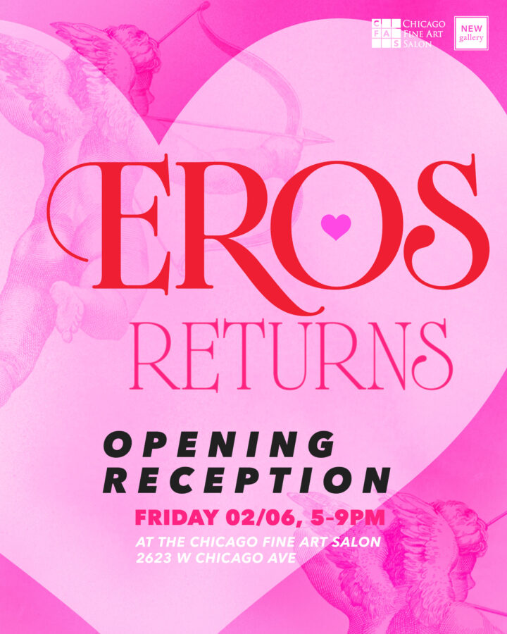

EROS Returns
An annual exhibition exploring the varied dimensions of desire, love, and intimate connection, EROS Returns features submission from our open call seeking work that celebrates the emotional and aesthetic power of sensuality.
From erotic and sensual works to expressions of romance and platonic connection—the show celebrates intimacy, desire, and affection in all their forms.
On view February 6, 2026-March 6, 2025 at Chicago Fine Art Salon. Opening reception 5-9pm on February 6, 2026.